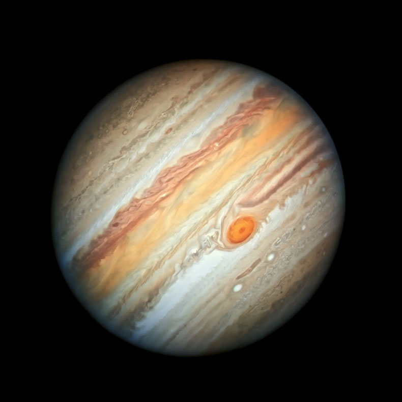

El Planeta Júpiter
Imagen
Datos 1

distancia desde el sol1
778,5 millones km 1
radio2
69.911km 2
gravedad3
24,79 m/s2 3
masa 4
1,898*1027kg 4
superficie 5
61,42 miles de millones km2 5
duracion del dia 6
od 9h 56m 6